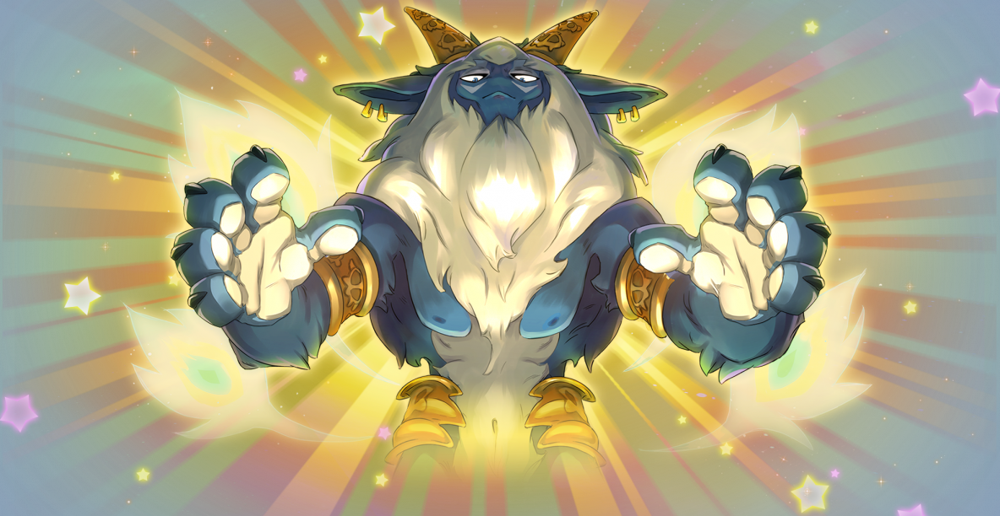
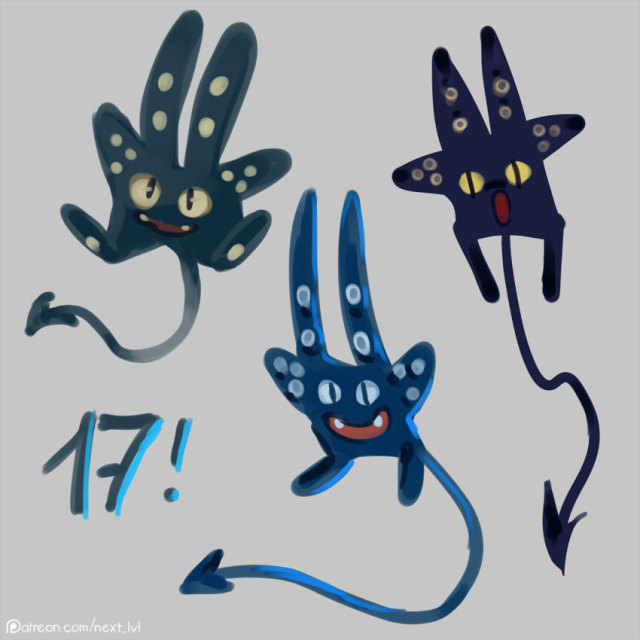

Owi Ankor est revenue !

Owi Ankor est de retour pour vous jouer un mauvais tour ! Lors de son dernier aussaut, Owi Ankor a mis un désordre sans nom. Quoiqu'il arrive, cet apôtre du Dieu Osamodas ne doit pas rejoindre son temple.
Evenement de groupe !
Venez profiter de l'occasion que vous offre Owi Ankor et arrêtez-la avant qu'elle ne puisse rendre hommage à son Dieu! Une montagne de loots et d'item seront obtenable si jamais ce boss est vaincu avant d'accomplir son devoir !
La rage du Dieu Osamodas !
La parole du Dieu Osamodas est absolue (du moins dans ses pensées). Osez vous prendre pour plus puissant qu'un Dieu et provoquez-le pour lui faire comprendre que ce dieu n'est pas le vôtre ! Terminez le nouveau donjon, la tour des invocations folles pour lui montrer que vous ne lui prêterez alléageance sous aucun prétexte et volez-lui un Gobgob qui deviendra votre familier!